Terug
Stop
Wat zouden
jullie zeggen
om meneer
te overtuigen?
Één antwoord is goed.
“Ik snap het helemaal meneer, maar de diëtist en logopedist geven niet voor niks dit advies. Zal ik vragen of een van hen nog een keer langs loopt om het er met u over te hebben? Zij kunnen het beter uitleggen dan ik.” 
“Ik denk ook echt dat uw vrouw sondevoeding moet krijgen. Ik vind het zo niet veilig meer voor mevrouw. Misschien kunnen we een ander moment zoeken waarop jij uw vrouw kan helpen?”
“Meneer, ze geven dit advies niet voor niks. Als ik jou was zou ik toch kiezen voor sondevoeding voor mevrouw. Ze zijn echt bang dat het de volgende keer helemaal fout gaat met het eten.”
“”